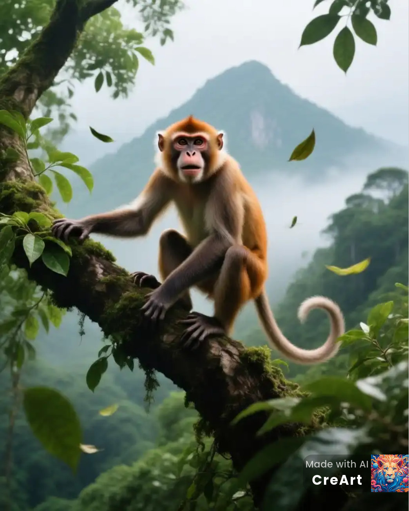

Entdecke das Faultier und seine Freunde
Diese Webseite stellt das Faultier in den Mittelpunkt und zeigt weitere Tiere, die in seinem Regenwald-Lebensraum vorkommen. Erfahre spannende Fakten über die Tierwelt Mittel- und Südamerikas.

Brüllaffe
Lebt in denselben Baumkronen wie das Faultier und ist bekannt für sein lautes Brüllen.
Mehr erfahren